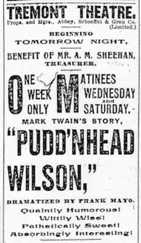

| 
Less than a year after Mayo's death his version of Pudd'nhead was back on tour across America, now produced by Jefferson & Mayo's Company (which included his son, who played Sheriff Blake), and starring Theodore Hamilton (referred to as an old stock company actor). By May, 1897, it had arrived back in Boston. The announcement below, which someone pasted into the front of one of the Barrett Collection's copies of the novel Pudd'nhead Wilson, was apparently cut out of a program from the Tremont Theater. It refers to all the characters as stock types, including Tom as "devilish and diabolical." The Boston Sunday Globe announced the new production in a short notice that linked the drama to the essential character of the "negro": The play opened Monday night, May 3, and the next day the Globe reviewed it briefly. Proceeds from the opening night box office went to benefit the theater's treasurer, a detail that furnished the reviewer with a lead. This critic seems to associate the play with the genre of nostalgic plantation tales: |